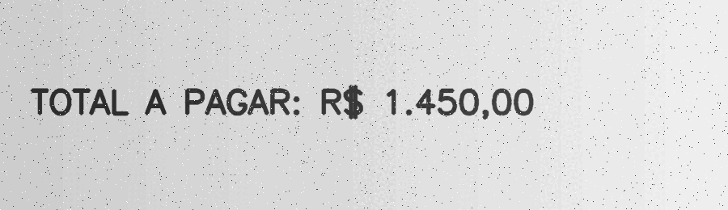
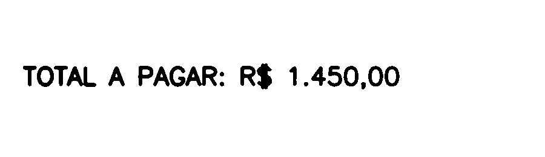

14. OCR e extração de texto¶
O que você aprenderá¶
Neste capítulo, você aprenderá que OCR não é apenas “transformar foto em texto”. Um sistema robusto precisa preparar a imagem, formular uma hipótese de layout, executar o reconhecimento e validar a saída.
Ao final, deverá conseguir:
- diferenciar detecção de texto e reconhecimento de texto;
- compreender o papel do pré-processamento;
- preparar documentos em tons de cinza;
- comparar limiar fixo, Otsu e adaptativo;
- compreender polaridade e contraste;
- corrigir inclinação em alto nível;
- entender modos de segmentação de página do Tesseract;
- usar
pytesseractquando disponível; - obter texto e dados por palavra;
- interpretar confiança como uma pista, não como garantia;
- extrair campos com expressões regulares;
- validar datas, valores e códigos;
- medir qualidade com CER/WER em alto nível;
- construir um pipeline com revisão de baixa confiança.
OCR combina processamento de imagem, modelagem de layout e reconhecimento de sequências. Tesseract é um motor amplamente utilizado cuja arquitetura evoluiu ao longo do tempo; a preparação adequada da entrada continua sendo decisiva (SMITH, 2007).
14.1 Duas tarefas diferentes¶
Em cenas reais, podemos separar:
Detecção de texto¶
Pergunta:
“Onde há palavras ou linhas?”
Reconhecimento¶
Pergunta:
“Quais caracteres existem nesta região?”
Um documento escaneado bem alinhado pode dispensar um detector explícito. Uma placa em uma cena urbana frequentemente exige localizar o texto antes de reconhecê-lo.
14.2 OCR é um pipeline¶
imagem
↓
controle de qualidade
↓
correção geométrica
↓
redução de ruído
↓
contraste / binarização
↓
segmentação de página
↓
OCR
↓
normalização do texto
↓
validação dos campos
Analogia: preparar uma folha para um leitor¶
Pedir OCR de uma imagem escura, torta e ruidosa é como entregar a alguém uma folha amassada sob pouca luz. Melhorar a legibilidade antes do reconhecimento reduz ambiguidades.
14.3 Convertendo para tons de cinza¶
Muitos pipelines de documentos não precisam manter três canais durante a preparação.
14.4 Aumentando resolução¶
Texto muito pequeno pode se beneficiar de ampliação.
Ampliação não cria detalhes que não foram capturados, mas pode tornar o traçado mais adequado ao pipeline seguinte.
14.5 Suavização com cautela¶
Blur demais pode unir letras como rn e m ou apagar traços finos.
A escolha deve preservar a geometria dos caracteres.
14.6 Otsu¶
Otsu funciona bem quando texto e fundo formam grupos de intensidade razoavelmente separáveis (OTSU, 1979).
14.7 Limiar adaptativo para iluminação irregular¶
adaptativa = cv2.adaptiveThreshold(
cinza,
255,
cv2.ADAPTIVE_THRESH_GAUSSIAN_C,
cv2.THRESH_BINARY,
31,
11
)
Pode ajudar em fotografias com sombra ou iluminação não uniforme.
Mas parâmetros ruins também podem fragmentar letras.
14.8 Polaridade¶
Texto escuro em fundo claro costuma ser uma configuração confortável para OCR de documentos.
Se uma etapa intermediária usar texto branco em fundo preto:
pode ser necessário inverter novamente antes do reconhecedor.
14.9 Morfologia em texto¶
Fechar pequenas falhas¶
kernel = cv2.getStructuringElement(
cv2.MORPH_RECT,
(2, 2)
)
fechada = cv2.morphologyEx(
binaria,
cv2.MORPH_CLOSE,
kernel
)
Cuidado¶
Kernel grande pode unir caracteres vizinhos.
Texto é estrutura fina
Em processamento de documentos, poucos pixels podem representar uma haste inteira de uma letra. Morfologia precisa ser muito mais conservadora do que em objetos grandes.
14.10 Inclinação (skew)¶
Uma linha de texto inclinada dificulta a análise de layout.
Podemos estimar um ângulo usando:
- contornos;
minAreaRect;- transformada de Hough;
- projeções horizontais.
Depois rotacionamos a página.
14.11 Exemplo didático de deskew por pixels de texto¶
Se o texto foi binarizado como primeiro plano branco:
A interpretação do ângulo exige cuidado porque minAreaRect possui convenções próprias. Sempre visualize o resultado e normalize o ângulo conforme o intervalo retornado.
14.12 Corrigindo rotação¶
altura, largura = imagem.shape[:2]
centro = (largura / 2, altura / 2)
M = cv2.getRotationMatrix2D(
centro,
angulo_corrigido,
1.0
)
corrigida = cv2.warpAffine(
imagem,
M,
(largura, altura),
borderValue=255
)
Para documentos, preservar fundo branco costuma ser útil.
14.13 Tesseract e PSM¶
O PSM (Page Segmentation Mode) informa ao mecanismo uma hipótese de layout.
Exemplos frequentemente úteis:
Analogia: dizer ao leitor o que esperar¶
“Leia esta página”, “leia esta linha” e “leia esta palavra” são tarefas diferentes. A hipótese de layout ajuda o reconhecedor a organizar a entrada.
14.14 OCR com pytesseract¶
import pytesseract
texto = pytesseract.image_to_string(
binaria,
lang="por",
config="--psm 6"
)
print(texto)
Isso exige que o executável Tesseract esteja instalado e que o idioma solicitado esteja disponível.
14.15 Fallback de idioma¶
Em material didático, podemos verificar idiomas instalados:
idiomas = pytesseract.get_languages(config="")
if "por" in idiomas:
idioma = "por"
elif "eng" in idiomas:
idioma = "eng"
else:
idioma = None
Se nenhum idioma adequado existir, o código deve informar claramente a dependência ausente.
14.16 image_to_data¶
Para obter caixas e confiança por palavra:
Depois:
for i, texto in enumerate(dados["text"]):
conf = float(dados["conf"][i])
if texto.strip() and conf >= 60:
x = dados["left"][i]
y = dados["top"][i]
w = dados["width"][i]
h = dados["height"][i]
Confiança é uma pista para triagem, não prova de correção.
14.17 Texto reconhecido ainda não é dado estruturado¶
OCR pode devolver:
em vez de:
O próximo passo pode incluir:
- normalização;
- expressões regulares;
- validação por domínio;
- checagem de consistência.
14.18 Expressões regulares¶
Exemplo didático de valor monetário:
import re
padrao = r"R\$\s*([0-9]+[,.][0-9]{2})"
resultado = re.search(padrao, texto)
if resultado:
valor = resultado.group(1)
Regex identifica um padrão de caracteres; não garante que o valor seja semanticamente correto.
14.19 Validação por consistência¶
Em um recibo:
podemos comparar soma e total.
Em outros documentos, podemos usar:
- dígitos verificadores;
- formato de data;
- intervalos plausíveis;
- lista de campos obrigatórios.
14.20 CER e WER¶
CER — Character Error Rate¶
Mede erros em caracteres com base em distância de edição.
WER — Word Error Rate¶
Mede erros em palavras.
Para avaliar OCR, precisamos de um ground truth correto e separado do processo de ajuste.
14.21 OCR de cena versus documento¶
Documento:
- fundo relativamente regular;
- texto alinhado;
- alta resolução;
- layout previsível.
Cena natural:
- perspectiva;
- texturas;
- reflexos;
- várias orientações;
- texto pequeno.
Modelos de detecção como EAST/CRAFT podem localizar regiões antes do reconhecedor.
14.22 Exemplo integrado do capítulo¶
O código do capítulo 14 cria um documento sintético e executa o pipeline mesmo quando Tesseract não está disponível.
Pipeline:
documento sintético
↓
ruído
↓
cinza
↓
Gaussiano
↓
Otsu / adaptativo
↓
pré-processado
↓
Tesseract opcional
↓
texto
↓
dados por palavra / confiança
| Antes | Pré-processado |
|---|---|
 |
 |
14.23 Erros comuns¶
| Sintoma | Causa provável | Correção |
|---|---|---|
| texto vazio | executável/idioma/layout | valide dependências e PSM |
| letras grudadas | morfologia/blur excessivo | reduza processamento |
| letras quebradas | erosão/limiar agressivo | preserve traços |
| OCR pior após binarizar | original já era boa | compare pipelines |
| linha inclinada mal reconhecida | skew | aplique deskew |
| PSM inadequado | hipótese de layout errada | escolha modo compatível |
| regex extrai valor errado | OCR contém erro | valide semanticamente |
14.24 Perguntas de revisão¶
- Qual diferença existe entre detectar e reconhecer texto?
- Por que pré-processar?
- Quando Otsu tende a funcionar bem?
- Quando adaptativo pode ser melhor?
- Por que blur excessivo prejudica letras?
- O que é deskew?
- Para que serve PSM?
- Qual diferença existe entre
image_to_stringeimage_to_data? - Por que confiança não garante correção?
- Por que regex não substitui validação?
Exercícios de fixação¶
Exercício 1¶
Crie uma imagem com três linhas de texto usando cv2.putText e tente OCR com PSM 6.
Exercício 2¶
Teste PSM 6, 7, 8 e 11 sobre entradas adequadas e inadequadas.
Exercício 3¶
Adicione ruído Gaussiano e compare OCR antes/depois de suavização.
Exercício 4¶
Compare Otsu e limiar adaptativo sob fundo em gradiente.
Exercício 5¶
Rotacione o documento em 5°, 10° e 15°. Meça a degradação.
Exercício 6¶
Implemente deskew e compare a saída reconhecida.
Exercício 7¶
Use image_to_data e desenhe caixas nas palavras com confiança acima de um limiar.
Exercício 8¶
Crie um recibo sintético com total monetário e extraia o valor por regex.
Exercício 9¶
Introduza propositalmente uma letra O no lugar de zero e crie uma etapa de validação.
Exercício 10¶
Calcule CER para uma frase conhecida e uma saída OCR com erros artificiais.
Exercício 11¶
Calcule WER para duas frases curtas.
Exercício 12¶
Construa uma política: confiança abaixo de 60 deve ir para revisão manual. Simule dados e conte quantos casos seriam revisados.
Exercício 13¶
Explique por que um único pipeline de pré-processamento não é ideal para todos os documentos.
Síntese¶
OCR é uma cadeia de decisões. Melhorar contraste, corrigir geometria e escolher o layout apropriado pode ser tão importante quanto o reconhecedor. A saída textual ainda precisa ser normalizada, validada e, quando necessário, revisada. O objetivo não é apenas “ler caracteres”, mas transformar uma imagem em informação confiável e auditável.
Referências¶
GONZALEZ, Rafael C.; WOODS, Richard E. Processamento Digital de Imagens. 3. ed. São Paulo: Pearson, 2010.
OTSU, Nobuyuki. A threshold selection method from gray-level histograms. IEEE Transactions on Systems, Man, and Cybernetics, v. 9, n. 1, 1979.
SMITH, Ray. An overview of the Tesseract OCR engine. In: International Conference on Document Analysis and Recognition. 2007.